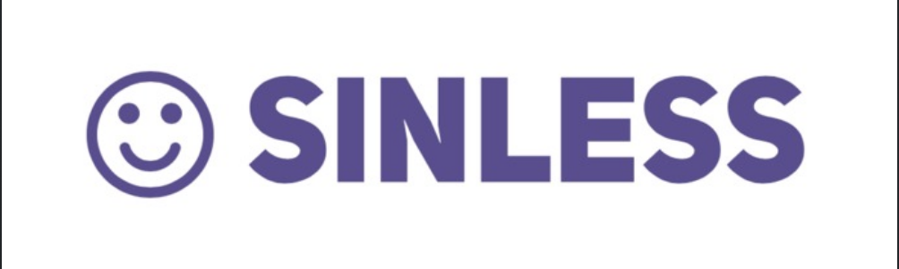
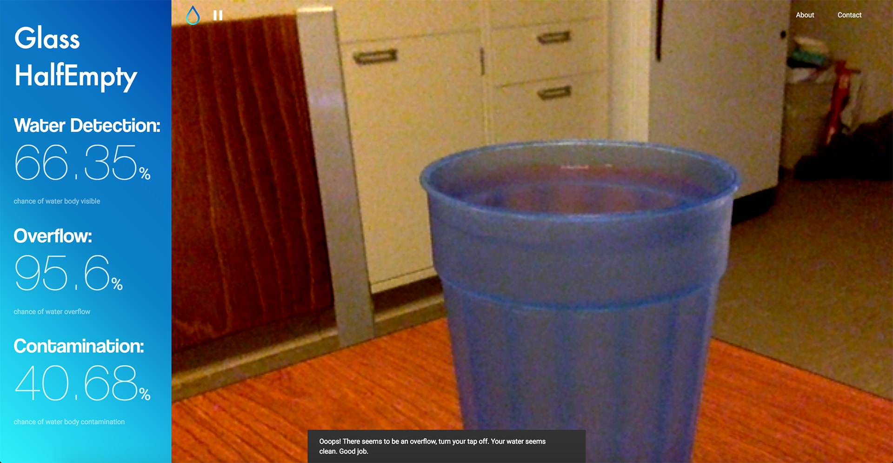
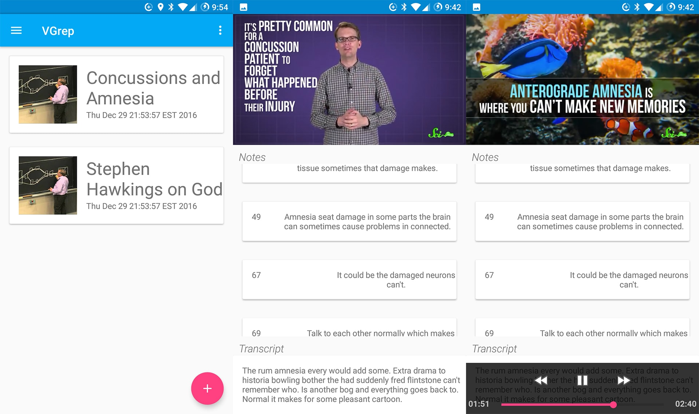
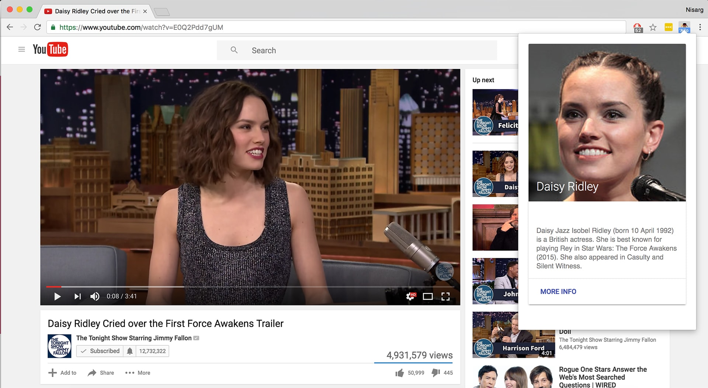

Intro

I am a junior in Computer Science at Purdue University. Talk geeky to me about anything technology, r/ProgrammerHumor, or cricket. One true admiration: Alan Turing.
EAT🍎. SLEEP😴. DEBUG👨🏾💻. REPEAT🔁.
I am a junior in Computer Science at Purdue University. Talk geeky to me about anything technology, r/ProgrammerHumor, or cricket. One true admiration: Alan Turing.
At Purdue Univeristy Prof. Szpankowski is heading the reasearch group theory@cs.purdue. This specializes in Algorithms, Complexity Theory, and Cryptography. I was part of the team which was specializing in graph theory. With Prof. Szpankowski, I was working on a program which helped estimate what percentage of a hidden graph is revealed as we find the path between two random nodes. I had written the program for that from scratch and helped improve the efficiency of an older program by reducing the run time by 40%.
At Appnique Inc. I was the tester. I was responsible for running tests, tracking the bugs, and making sure that they were assigned to the correct team to be fixed. For this purpose, I had used Assembla. I was also responsible for making sure that website was responsive across all the browsers. I automated testing using Selenium.

CryptoLeague is a platform which allows cryptocurrency enthusiasts to get together and practice their investment strategies. By giving users a platform to build virual cryptocurrency portfolios and having leagues to compete in, CryptoLeague encourages all ranges of crypto enthusiasts to come together and build a community.
GeoNotes is an application which allows the user to save notes at a particular location picked on a map.
Macropolois a Facebook bot that helps you shop smarter. Based on the users query, it scrapes Craigslist and gives the top 5 listings with their prices. It then texts the seller and even bargains on your behalf to get you the best deal possible. I worked on the SMS system to establish a contact between the two parties and contributed to the backend written in Node.js.
Formed at the intersection of different platforms, MailMax is a collection of powertools for your email, phone and cloud. It allows the user to access their Box Drives and add files, send information about upcoming MLH Hackathons and add high priority to emails by notifying the reciever via phone or SMS when an email is recieved. I solely worked on various features made using the MixMax and Twilio APIs. MailMax won The Best Use of MailMax API at MHacks V, official hackathon of University of Michigan.
SinLess makes you a better person by tying a financial penalty to your deeds. I worked on the Android app, getting the number of steps from a built-in pedometer and contributing to the interface. SinLess won The Top 10 hacks at BoilerMake IV, official hackathon of Purdue University.
Glass Half-Empty is a webapp which uses Machine Learning to detect if the glass is full and check the purity of the water. I contributed to the backend written in Node.JS and trained the Machine Learning model with Clarif.ai API.

Spexy is a remote monitoring and task management system for PCs and servers. It allows users to remotely check CPU Usage, disk usage, RAM usage and control process remotely from the web app. The PC client app written in Python works on both Windows and Linux.
VGrep is an Android app which automatically generates notes from a video lecture. It uses Deepgram API to get audio transcripts and then uses Machine Learning algorithms to determine the important points in the lecture. The Android app allows users to jump to the important points in an intuitive UI.
CelebFinder is Chrome browser extension which spots and recognizes any celebrity on screen with Microsoft's facial recognition API and displays their information from WikiPedia. It won the prize for "Best Web App" at HelloWorld hackathon.
Check out my other projects and internships:
Want to discuss a new project, need a dev for an existing project, want to exchange pictures of dogs, send me an email!
For some embarassing tagged photos and recent events, check my social pages: